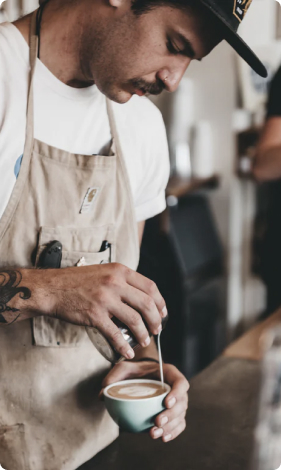
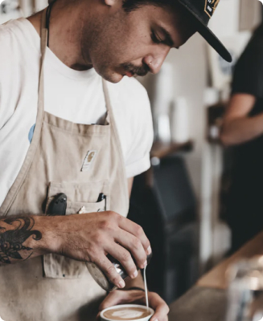
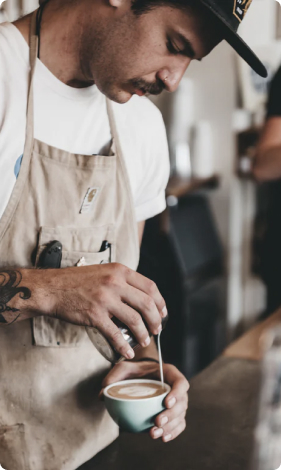
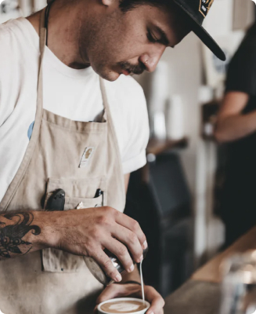

Our commitment
We’re built on a simple mission and a commitment to doing good along the way. We want to make it easy for you to discover and brew the world’s best coffee at home. It all starts at the source. To locate the specific lots we want to purchase, we travel nearly 60 days a year trying to understand the challenges and opportunities in each of these places. We collaborate with exceptional coffee growers and empower a global community of farmers through with well above fair-trade benchmarks. We also offer training, support farm community initiatives, and invest in coffee plant science. Curating only the finest blends, we roast each lot to highlight tasting profiles distinctive to their native growing region.